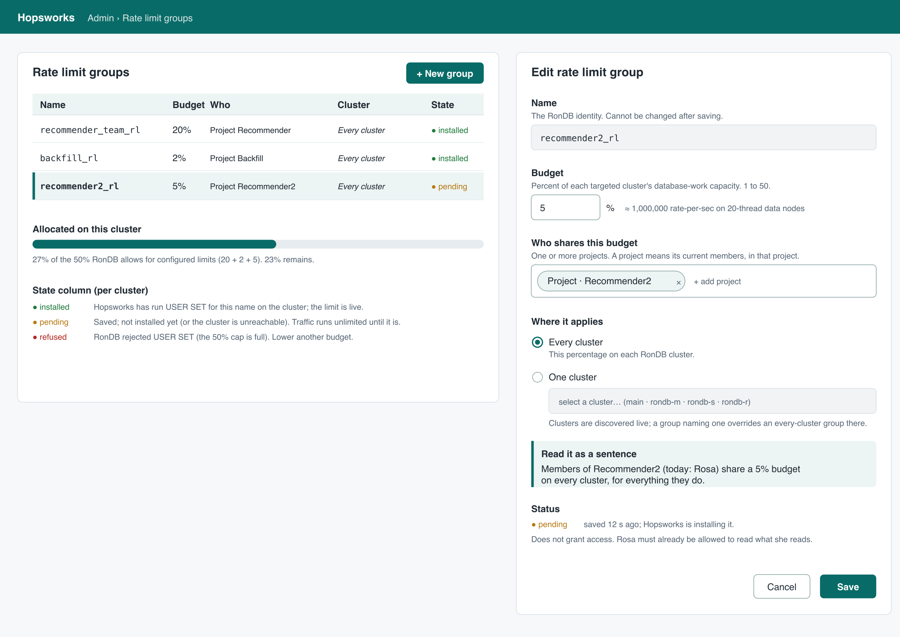

Hopsworks · RonDB · Feature white paper · November 2026
Hopsworks OnlineFS Ratelimiting Version 2.0
Shared database budgets for teams. An administrator can say “this team may use 20% of the online feature store”, or “that team may use 5% of this cluster”. RonDB then enforces each team’s budget, whether the team’s members connect through the REST server (RDRS) or through the MySQL server.
The online feature store is one RonDB cluster, or several, shared by every project, every user and every job in a Hopsworks installation. This feature introduces the rate limit group: a named budget shared by one or more whole projects, covering everything their members do in them, on every cluster or on one named cluster. Rate limit groups are created on one administration page. Work that falls under a rate limit group is slowed down and, if it keeps coming, rejected once the budget is used up; everyone outside the rate limit group is unaffected.
This paper describes the problem, the feature, how the limit is applied, a worked scenario, the administration page, what a limited team experiences, and how budgets are planned.
1. Summary
- One budget per team, not per key. A rate limit group is a share of the cluster given to one or more projects. Every member’s work draws from the same budget, through both entry points for data: the REST server (RDRS) and the MySQL server.
- Scoped to a cluster when needed. A rate limit group covers every RonDB cluster, or names one. In installations with a cluster per large project, that lets the owner of a cluster cap what each other team may burn on it.
- A ceiling, never a permission. Rate limit groups do not grant or revoke access, and they do not reserve capacity. They stop one team from degrading the cluster for the others.
- Managed in Hopsworks, installed by Hopsworks. One page lists the rate limit groups, their budgets, who shares them, where they apply, and whether each is live. Hopsworks itself installs the limits on the right cluster; nothing else needs configuring.
- Enforced in RonDB. Work is metered in CPU time per data node. Over budget, requests are first queued, then rejected with a retryable error.
2. The problem: one shared cluster, many tenants
Data in the online feature store is reached through two entry points: the REST server (RDRS), for low-latency key lookups with an API key, and the MySQL server, for SQL with a database account. Every project and every user share one RonDB cluster behind both. All of their work competes for the CPU of the same data nodes, and when one user takes more than their share, every other user sees it as latency.
A limit per identity is the obvious tool, and RonDB can put a budget on a name. The question is which name. The natural identities are too fine:
- A user has several API keys, and creates more at will. A budget per key multiplies with every key.
- The same user also connects through the MySQL server with a database account, not a key. A budget per key never sees that traffic.
- Splitting a team’s share evenly across its identities starves the busy one while the idle ones hold capacity nobody uses.
What an administrator wants to say is “this team, together, may use this much”, where a team is a set of people, and sometimes “this team may use this much of this cluster”. That is what a rate limit group expresses.
3. The feature: rate limit groups
A rate limit group is a named budget with two things attached: who shares it and where it applies.
| Part | What the administrator enters |
|---|---|
| Name | A short name for the budget. |
| Budget | A percentage of a cluster’s capacity for database work. Section 4 explains what a given percentage means. |
| Who | One or more whole projects. A project means its current members, working in that project: people who join later are covered automatically, people who leave drop out. A person who is in two projects is covered in each by that project’s group. |
| Cluster | Either every cluster, or one named RonDB cluster. With a single cluster there is nothing to choose; section 10 covers installations with several. |
Everyone in the rate limit group draws from the same budget, so one busy member can use it all. What the rate limit group guarantees is that the rest of the cluster is protected from that team. The budget covers everything the members do: their own project’s data and anything shared with them, reads and writes, through either entry point. Two things a rate limit group is not:
- Not a permission. Listing someone in a rate limit group does not let them read anything they could not read before, and removing a share still blocks them even if a rate limit group names them. Access is decided by project membership and sharing, as before.
- Not a reservation. 20% is a ceiling, not capacity set aside for the team. On an idle cluster the team still gets at most 20%; on a busy one it is still allowed up to 20%.
Rate limit groups are not tied to the organisation chart. A rate limit group for a project of heavy users, another for a partner team’s projects, and a small one for a free-tier project are the same mechanism with different lists.
4. What a budget of 20% means
Think of each data node as able to do a fixed amount of database work every second. A budget is a slice of that. A budget of 20% means the team may use up to one fifth of each data node’s work capacity, every second.
“Work” is what the database actually does, not how many requests arrive. Looking up one row is cheap. Writing one row costs about three times as much. Scanning through a table costs a little per row examined, so a query that reads one row is cheap and a query that scans a million rows is expensive. All of it is counted in the same unit and charged to the team’s budget.
For example, on a data node with 20 CPU cores, if the team did only one kind of work:
| Budget | Simple lookups | or writes | or rows scanned |
|---|---|---|---|
| 20% | about 3 million per second | about 1 million per second | about 5 million per second |
| 5% | about 800,000 per second | about 250,000 per second | about 1.3 million per second |
| 2% | about 320,000 per second | about 100,000 per second | about 500,000 per second |
Three simple facts about a budget:
- It is shared. Everyone in the rate limit group, through both entry points, draws from the same budget. One member running a big scan can use it all.
- It is a ceiling. The team is never held below its budget and never allowed above it, whatever the rest of the cluster is doing. An idle cluster does not give the team more; a busy cluster does not give it less.
- It is per data node. Work spread across the cluster can use the budget on every node; work that piles onto one node hits that node’s limit first.
5. How a limit is applied
When someone reads or writes, RonDB charges the work to the rate limit group of the project they are working in. Four rules cover every case:
- Both entry points count. A request through the REST server (RDRS) with an API key and a query through the MySQL server with a database account are charged to the same rate limit group, because both identify the person doing the work and the project they do it in. The platform’s own administrative queries are not charged.
- One group per project per cluster. The administration page refuses two rate limit groups that would both list the same project on the same cluster. The one sanctioned overlap: a group naming a cluster wins there over a group covering every cluster, which is how “20% everywhere, but 30% on this cluster” is written.
- The whole transaction is charged together. A request that touches several tables, such as a feature-view read, is charged as a whole to the caller’s rate limit group.
- Not in a group, not limited. Work in a project that is in no rate limit group is not limited.
Work is measured as CPU time on the data nodes: a small cost per row read, a larger one per row written, a cost per row scanned, plus a little per byte moved. Each data node lets a group’s total drain at the configured rate. Short bursts pass. Sustained excess is first slowed by queueing new transactions, then, if it continues, reads are rejected with a temporary error, and writes only under heavy, sustained overload (section 8).
6. A worked scenario
In Hopsworks, a project is a team’s workspace: it has members, and it owns a feature store, which is the project’s collection of feature groups (tables of features). A project can share its whole feature store, or single feature groups, with other projects, whose members may then read that data. The scenario has five projects on one cluster; Backfill is the project from which Mary and Mike run their backfills:
| Project | Members | Feature groups it owns | Shared with |
|---|---|---|---|
| Marketing | Mary, Mike | marketing_clicks, marketing_campaigns | Recommender, Recommender2, Backfill (whole store) |
| Sales | Sam | sales_orders | Recommender (that one feature group) |
| Recommender | Alice, Ava | recommender_features | nobody |
| Recommender2 | Rosa | recommender2_features | nobody |
| Backfill | Mary, Mike | none | nobody |
The administrator has three requirements, each of which is one rate limit group. Group names are
free text; the examples end in _rl (for “rate limit”) so that a group is never
confused with the project it is named after:
| Requirement | Rate limit group | Who | Cluster | Budget |
|---|---|---|---|---|
| “Recommender gets 20% of the cluster, whatever its members do.” | recommender_team_rl | project Recommender | every cluster | 20% |
| “The members of project Backfill together may use at most 2%, so their backfills cannot disturb production serving.” | backfill_rl | project Backfill | every cluster | 2% |
| “Recommender2 may use at most 5%.” | recommender2_rl | project Recommender2 | every cluster | 5% |
The first is the classic team share. The second bounds a small project without touching what its members do in Marketing. The third bounds a consumer team, including everything it reads of Marketing’s shared data. With these three rate limit groups in place:
| Who reads what | Charged to | Why |
|---|---|---|
Alice reads recommender_features | recommender_team_rl | Alice is in project Recommender. |
Alice reads marketing_clicks | recommender_team_rl | Same. Borrowed data is no different: the budget follows the project she works in. |
Ava reads sales_orders | recommender_team_rl | Same rate limit group; Alice and Ava share the 20%. |
Mary, from Backfill, reads marketing_clicks | backfill_rl | Backfill is listed; everything its members do in it draws from the 2%. |
Mary, from Backfill, reads marketing_campaigns | backfill_rl | Same: the cap is on the project, not on a table. |
Mary, from Marketing, reads marketing_clicks | none | Marketing is in no rate limit group. Each project Mary is in follows its own group. |
Rosa reads marketing_clicks | recommender2_rl | Rosa is in Recommender2. |
Rosa reads sales_orders | rejected | Sales never shared with Recommender2. Access is checked before any rate limit group. |
Sam reads sales_orders | none | Sam is not in any rate limit group, so his reads are not limited. |
The three rate limit groups add up to 27% of the cluster. The cluster carries one budget per rate limit group, not one per person or per key, so a handful of rate limit groups covers a whole organisation.
7. Administration
One page under Hopsworks administration: a list of rate limit groups on the left, and a form for the selected rate limit group on the right. The list also shows whether each rate limit group is live on its clusters, so an administrator can see when a saved rate limit group has actually been installed. Hopsworks installs the limits itself, on the right cluster, when a group is saved and whenever project membership changes; there is nothing to configure beyond the page.

recommender2_rl from the scenario. “Every cluster” is the default; naming one cluster scopes the budget to it.Three details worth knowing:
- The name is fixed after saving. It is the identity RonDB meters; renaming would mean dropping and recreating the limit.
- The budget field shows the converted rate, so the administrator sees what each cluster will receive (section 9), and the sentence preview restates the rate limit group in words, which is the quickest check that the fields were filled in as intended.
- The cluster list is live. The page offers exactly the RonDB clusters that exist right now; a group for a cluster that is gone simply shows pending until the cluster is back.
| State column | Meaning |
|---|---|
| ● installed | The limit is live on the cluster. |
| ● pending | Saved in Hopsworks; the cluster does not have it yet, or is unreachable. Until it does, that traffic runs unlimited. |
| ● refused | The cluster rejected it because the total budget is already full (section 9). Lower another budget first. |
The page refuses two rate limit groups that would both list the same project on the same cluster, so every request has exactly one budget. Who may create rate limit groups is an administrator role; the page lives under Hopsworks administration.
8. What a limited team experiences
RonDB adds up work under the group’s name and lets the total drain at the configured rate. Short bursts pass unnoticed. Sustained excess is handled in stages:
- Slower. New transactions from the rate limit group are queued for a short time before they start. Latency rises; nothing fails.
- Reads rejected. If the excess continues, reads get a temporary error: HTTP 429 from the REST server (RDRS), MySQL error 1297 with the RonDB reason from the MySQL server.
- Writes rejected only under heavy, sustained overload.
Rejections are temporary and carry no risk to data; callers back off and retry. Nobody outside the rate limit group is affected, which is the point.
9. Planning budgets
Budgets are percentages of each data node’s capacity for database work (section 4), and they add up across rate limit groups on each cluster.
All budgets together may not exceed 50% of a data node. The reason is simple: the meter only counts row operations, the reads, writes and scans a user causes. Redo logging, checkpoints, network threads, schema changes, backups and the platform’s own unmetered work also need CPU. Half the machine is kept for them, so that even when every rate limit group runs at its ceiling the node is not saturated and the limits still mean something. Three consequences for planning:
- A rate limit group counts toward the 50% even while its members are idle. A handful of team-sized rate limit groups fits comfortably.
- If a new rate limit group would push the total over 50% on a cluster, that cluster refuses it and the administration page shows refused. Lower another budget first.
- Budgets are ceilings, not reservations.
10. Several clusters
Some installations give each big project its own RonDB cluster. The owner of a cluster then wants to say “that team may use 20% of my cluster, this other team 30%”. A rate limit group expresses that by naming the cluster: one group per team, scoped to the owner’s cluster, each a percentage of that cluster. A group covering every cluster means that percentage on each of them, and a group naming a cluster wins there over an every-cluster group listing the same project, which is how one team gets 20% everywhere but 30% on one cluster. Hopsworks discovers the clusters automatically and installs each group on the right one; the administration page shows the state per cluster.
11. Questions we expect
- Does a rate limit group restrict who can read what?
- No. Access is decided by project membership and sharing exactly as before. A rate limit group only decides which budget pays for work that is already allowed.
- Someone joins or leaves the team. Do I edit the rate limit group?
- No. A rate limit group names projects; membership is read live, and the limit follows within moments of the change.
- Can a person be in two rate limit groups?
- Through two projects, yes: a person in two projects is covered in each by that project’s group, and their work in one project never draws from the other’s budget. A project itself is in two groups only across clusters: a group naming a cluster and an every-cluster group may both list it, and the named one wins on its cluster. Two groups that would both list the same project on the same cluster are refused, so every request has exactly one budget.
- Can I limit a team only on certain feature groups?
- No. A budget covers everything its members do on the cluster. To protect a specific dataset’s cluster, give the consuming team a budget on that cluster; on a single shared cluster, size the team’s overall budget so production serving keeps its headroom.
- A query touches several feature groups, such as a feature view.
- The whole transaction is charged to the caller’s rate limit group.
- Is 20% a guarantee?
- No. It is the most the team may use.
- We have several clusters. Does a rate limit group cover all of them?
- An every-cluster group means that percentage on each cluster. A group naming one cluster is enforced only there.